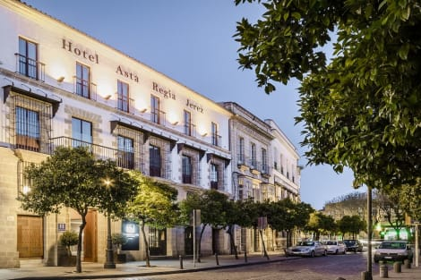
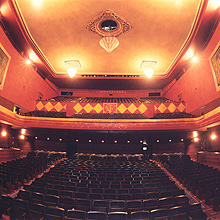

ALOJAMIENTO
El hotel Ítaca, con 4 estrellas y situado cerca del Teatro Villamarta, te envuelve en un ambiente tranquilo y
elegante ideal para relajarte en tus vacaciones. Disfruta de confortables y luminosas habitaciones con vistas al centro urbano. Saborea nuestro restaurante a la carta.
Prueba el completo desayuno buffet que se sirve en la hermosa capilla reformada del convento. Y por supuesto vive Jerez.
MEDIOS DE TRANSPORTE
Gracias al servicio de transporte que nos ofrece el Consorcio de Transportes de la Bahía de Cádiz
podemos asegurar su comodidad y puntualidad al evento si se aloja lejos del Teatro. Sin embargo, si decidió alojarse en el
hotel Ítaca, el Teatro Villamarta está a cinco minutos a pie.

LUGAR DE CELEBRACIÓN
El Teatro Villamarta es un espacio ideal donde alojar nuestros eventos. Con capacidad para 1.226 espectadores entre el patio de butacas y los dos pisos, el Teatro Villamarta de Jerez de la Frontera es uno de los teatros de referencia de Cádiz.
Inaugurado en 1926, es obra del arquitecto Teodoro Anasagasti y está ubicado en el antiguo Convento de Veracruz. Tras su cierre en 1984,
fue comprado dos años más tarde por el Ayuntamiento de la localidad gaditana y reinagurado en 1996. Es la sede principal del Festival de Jerez de flamenco.